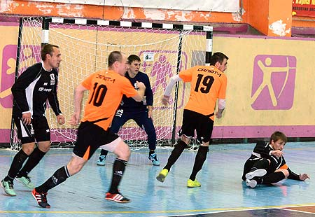

На всех фронтах без потерь!
В субботу, 3 декабря, завершился первый круг чемпионата Ангарска по мини-футболу. Многие перенесенные матчи остались несыгранными. Всего в чемпионате участвуют 10 команд. По результатам первого круга у пяти из них есть реальные шансы побороться за медали чемпионата. Чемпионат получился зрелищным. Игры между первой пятеркой команд, а также с участием команд «Атом-АЭХК» и «Ангара» проходят в интересной, острой и бескомпромиссной борьбе. Результат каждой из этих встреч заранее не предскажешь. К неожиданностям чемпионата можно отнести победу «Динамо» над «Волной». Уверенную победу «Волны», что называется в одну калитку, над студентами АнГТУ тоже не назовешь предвиденной.
Лидирует в чемпионате команда САЛЮТ, представляющая пиротехническую Компанию САЛЮТ-1. Несмотря на то, что "пиротехники" сражаются сразу на трёх фронтах (чемпионат Ангарска, чемпионат области и кубок Иркутска) - на всех трёх фронтах команда САЛЮТ пока не знает очковых потерь. В чемпионате Ангарска у «пиротехников» в восьми встречах восемь побед.

Вторую строчку занимает команда ТЭЦ-10. Экс-чемпион города по летнему футболу (под флагом «Фортуны») впервые за последние годы выбился на второе место в зимнем мини-футболе. Судя по всему, у команды на этот чемпионат самые серьезные планы. Во многом определяющей для закрепления на втором месте станет перенесенная встреча ТЭЦ-10 с «Волной». Пока же в восьми сыгранных матчах ТЭЦ-10 одержала шесть побед и потерпела два поражения.
На третьем месте расположилась команда «Динамо», представляющая структуры сил охраны правопорядка в городе. Нужно отметить, что «Динамо» так высоко пока еще не забиралась в турнирной таблице. Это несомненный успех «силовиков». В девяти матчах одержано пять побед и одну игру динамовцы свели к ничьей.
Четвертую строчку турнирной таблицы занимает команда АнГТУ, представляющая одноименное высшее учебное заведение. В чемпионатах города студенты всегда выступают неплохо и постоянно борются за медали. Вот и сейчас в семи сыгранных матчах команда АнГТУ одержала пять побед. В двух перенесенных встречах с аутсайдерами чемпионата студентам по силам набрать шесть очков и потеснить на промежуточном пьедестале команды ТЭЦ-10 и «Динамо».
К скрытым лидерам нужно отнести экс-«Алекс». Эта команда в очередной раз поменяла спонсора и выступает в чемпионате под названием «Волна». В запасе у этой команды аж три перенесенные игры. Есть вполне хорошие шансы подняться с пятого места на вторую или третью строчку по итогам первого круга, после того как пройдут перенесенные матчи.
Самой результативной встречей первого круга стала победа команды «Атом-АЭХК» над «Маяком» со счетом 21:3.
Самую крупную победу одержала команда «Динамо» над тем же «Маяком» со счетом 22:1.
Самой забивающей командой также пока остается «Динамо» – 77 забитых голов по итогам первого круга.
Меньше всех пропускает «Салют» – 21 пропущенный гол.
Лучшая разница забитых и пропущенных мячей также у команды «Салют» + 50.
Самой миролюбивой командой по итогам первого круга стала команда «Атом-АЭХК», дважды сыгравшая вничью с одинаковым счетом, – 4:4. Нужно отметить, что в мини-футболе, в отличие от большого футбола, ничьи – довольно редкое явление.
Пока не сыгранными остались матчи: «Салют» – «Атом-АЭХК», АнГТУ – ППЖТ, АнГТУ – «Маяк», ТЭЦ-10 – «Волна», «Волна» – «Атом-АЭХК», «Волна» – ППЖТ, «Ангара» – «Маяк».
Автор: Ангарская газета "СВЕЧА"
08 Декабря 2016